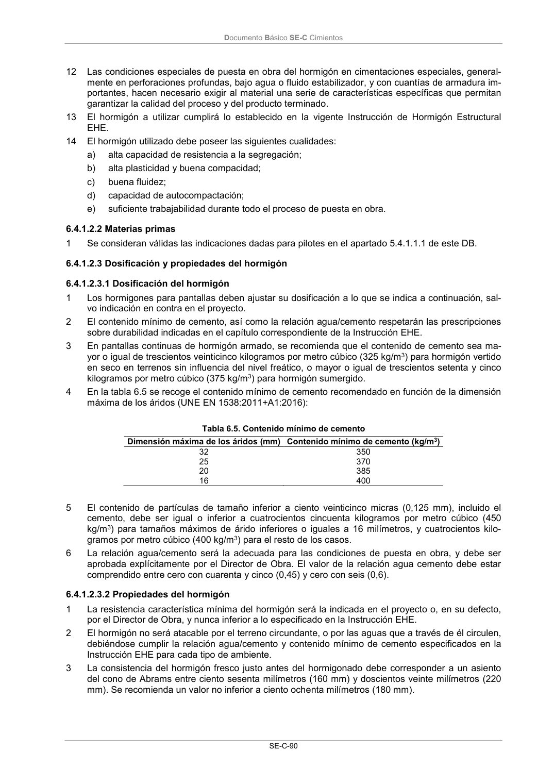

DB-SE-C Cimientos · edición 2019-12-20 · capa oficial
Documento DB-SE-C-oficial · SHA-256 del PDF a71133f4b0dca253e45ea3071c70f2a512354bcc5cd841bf89b1a502f567ac5e
Copia fiel del PDF fuente · Fuente oficial
Ficha de la disposición en la fuente oficial
Formatos: JSON del segmento · Markdown
disposición de los elementos de agotamiento, si la excavación se realizase en parte bajo el ni- vel freático; e) sujeción de la pantalla mediante los forjados del edificio; f) eliminación de los elementos provisionales de sujeción o de los anclajes, si los hubiera. 3 Debe atenderse especialmente a evitar que, en alguna fase de la ejecución, puede encontrarse la pantalla en alguna situación no contemplada en el cálculo y que entrañe un mayor riesgo de inesta- bilidad de la propia pantalla, de edificios u otras estructuras próximas o del fondo de la excavación o esfuerzos en la pantalla o en los elementos de sujeción superiores a aquellos para los que han sido dimensionados. 4 El diseño de la pantalla debe garantizar que no se producen pérdidas de agua no admisibles a tra- vés o por debajo de la estructura de contención así como que no se producen afecciones no admi- sibles a la situación del agua freática en el entorno. 5 Los muretes guía tienen por finalidad garantizar el alineamiento de la pantalla hormigonada, guiar los útiles de excavación, evitar cualquier desprendimiento del terreno de la zanja en la zona de fluc- tuación del fluido de excavación, así como servir de soporte para las jaulas de armadura, elementos prefabricados u otros a introducir en la excavación hasta que endurezca el hormigón. Deben resistir los esfuerzos producidos por la extracción de los encofrados de juntas. 6 Habitualmente son de hormigón armado y construidos “in situ”. Su profundidad, normalmente com- prendida entre medio metro y metro y medio (0,5 y 1,5 m), dependiendo de las condiciones del te- rreno. 7 Los muretes guía deben permitir que se respeten las tolerancias especificadas para los paneles de pantalla. 8 Será recomendable apuntalar los muretes guía hasta la excavación del panel correspondiente. 9 La distancia entre muretes guía debe ser entre veinte y cincuenta milímetros (20 y 50 mm) superior al espesor de la pantalla proyectada. 10 En caso de pantallas poligonales o de forma irregular, podrá ser necesario aumentar la distancia entre muretes guía. 11 Salvo indicación en contrario del Director de Obra, la parte superior de los muretes guía será hori- zontal, y estará a la misma cota a cada lado de la zanja. Es conveniente que la cara superior del murete guía se encuentre, al menos, 1,5 m sobre la máxi- ma cota prevista del nivel freático. Documento Básico SE-C Cimientos SE-C-90 12 Las condiciones especiales de puesta en obra del hormigón en cimentaciones especiales, general- mente en perforaciones profundas, bajo agua o fluido estabilizador, y con cuantías de armadura im- portantes, hacen necesario exigir al material una serie de características específicas que permitan garantizar la calidad del proceso y del producto terminado. 13 El hormigón a utilizar cumplirá lo establecido en la vigente Instrucción de Hormigón Estructural EHE. 14 El hormigón utilizado debe poseer las siguientes cualidades: a) alta capacidad de resistencia a la segregación; b) alta plasticidad y buena compacidad; c) buena fluidez; d) capacidad de autocompactación; e) suficiente trabajabilidad durante todo el proceso de puesta en obra.
